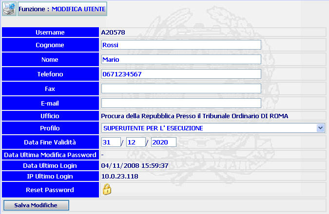

GENERALITA'
MODIFICA UTENTE: La funzione, consente di modificare i dati di un utente di sistema, introdotti precedentemente con la funzione Inserimento Utente.
LE MASCHERE VIDEO
La funzione in esame viene realizzata attraverso l'utilizzo della seguente maschera che riporta gli elementi descrittivi e operativi dei dati dell'utente:

COME FARE PER ...
| Per modificare i dati di un utente l'amministratore deve: |
Posizionarsi sulla scheda di Modifica;
Introdurre e/o modificare i dati prescelti;
Confermare i dati inseriti e/o modificati nella maschera agendo sul bottone
. A fronte di questa operazione i dati vengono inseriti nel sistema e viene visualizzata la scheda del Dettaglio utente.
| Per effettuare il RESET della Password dell'utente l'amministratore deve: |
Cliccare sul pulsante
 ;
verrà visualizzato il seguente messaggio:
;
verrà visualizzato il seguente messaggio:

a) Cliccando sul pulsante
 si annullerà
l'operazione di cancellazione e si ritornerà alla pagina di dettaglio dell'utente.
si annullerà
l'operazione di cancellazione e si ritornerà alla pagina di dettaglio dell'utente.
b) Cliccando sul pulsante
 il sistema visualizzerà il messaggio:
il sistema visualizzerà il messaggio:

Cliccando sul pulsante
il sistema visualizzerà la maschera "Lista Utenti Attivi"
N.B. La reimpostazione della Password consiste nel porre come Password il codice Utente corrispondente.
CAMPI
I dati che possono essere modificati sono i seguenti:
| NOME | DESCRIZIONE |
| Cognome * | Compilare il campo con testo libero; Campo obbligatorio |
| Nome * | Compilare il campo con testo libero; Campo obbligatorio |
| Telefono | Compilare il campo con testo libero |
| Fax | Compilare il campo con testo libero |
| E_Mail | Compilare il campo con testo libero |
| Profilo | Selezionare tramite la tendina la voce prescelta |
| Data Fine Validità | Compilare il campo data nel formato gg/mm/aaaa. |
Da notare che per i campi Cognome e Nome sono obbligatori.
PULSANTI
Oltre al pulsante
 di stampa del contesto (videata)
di stampa del contesto (videata)
|
PULSANTE |
DESCRIZIONE |
|
|
Questo pulsante ha lo scopo di reimpostazione della Password dell'utente. |
BOTTONI
Oltre ai comandi funzionali relativi al menù verticale sono presenti i seguenti comandi:
|
COMANDI |
DESCRIZIONE |
|
|
A fronte di tale comando, il sistema dopo aver verificato la validità dei dati specificati, inserisce i dati nel sistema e viene visualizzata la scheda del Dettaglio utente. |
CONTROLLI
A fronte
della pressione del bottone
 , il sistema
verifica la correttezza dei dati e visualizza un messaggio di errore nel caso che:
, il sistema
verifica la correttezza dei dati e visualizza un messaggio di errore nel caso che:
Entrambi i campi obbligatori, COGNOME e NOME, non risultino inseriti.
Il formato della DATA FINE VALIDITA' non sia corretta.
Se il sistema non riscontrerà errori verrà visualizzata la maschera del Dettaglio Utente.